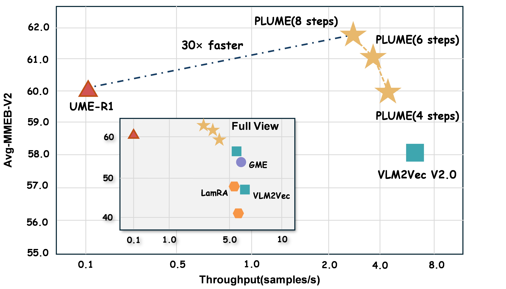
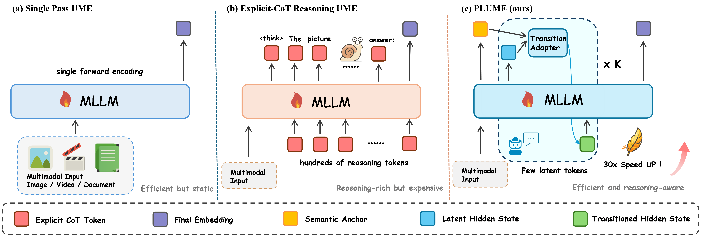
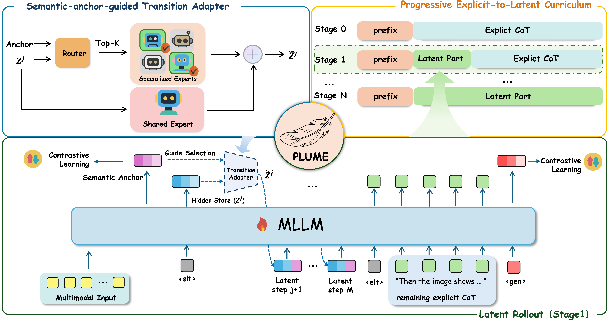
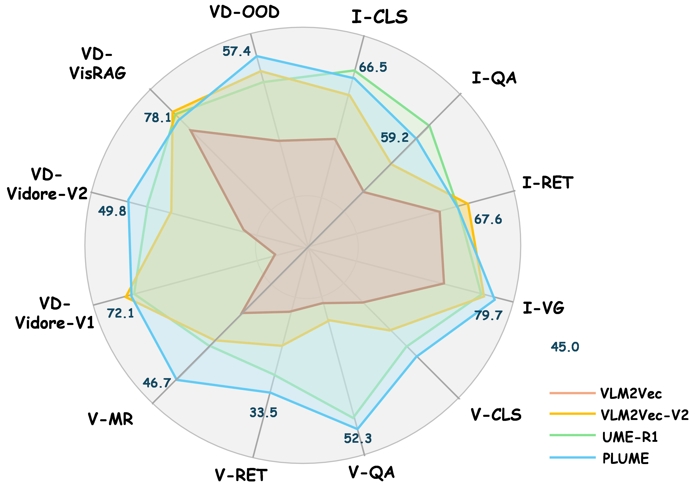
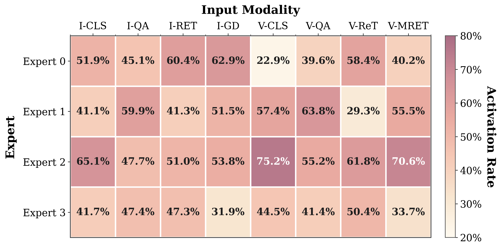
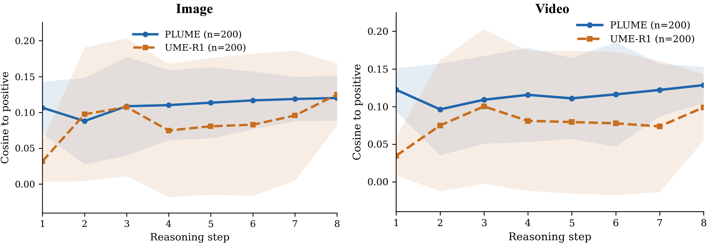

Figure 1. PLUME achieves a favorable accuracy–efficiency tradeoff on MMEB-v2. The x-axis shows inference throughput on a single H20 GPU and the y-axis shows average MMEB-v2 performance.
Abstract
Universal multimodal embedding (UME) maps heterogeneous inputs into a shared retrieval space with a single model. Recent approaches improve UME by generating explicit chain-of-thought (CoT) rationales before extracting embeddings, enabling multimodal large language models to better infer complex query intent. However, explicit CoT incurs substantial inference overhead and can compress rich multimodal evidence into a narrow textual bottleneck. We propose PLUME, a latent reasoning framework that advances UME by replacing verbalized CoT with a short autoregressive rollout of continuous latent states. To support diverse multimodal queries, PLUME further introduces a semantic-anchor-guided transition adapter that steers latent rollout along different reasoning trajectories under the same fixed computation budget. To stabilize training, PLUME adopts a progressive explicit-to-latent curriculum that uses verbalized reasoning only as a temporary training scaffold and gradually transfers this behavior into hidden-state computation, eliminating explicit CoT at inference. On the 78-task MMEB-v2 benchmark, PLUME outperforms strong explicit-CoT UME baselines while reducing reasoning from hundreds of generated tokens to fewer than 10 latent steps, delivering over 30× faster inference. PLUME is especially well suited to retrieval settings where relevant evidence is dense, structurally complex, and difficult to organize through verbalized intermediate rationales, such as video and visual document retrieval.

Figure 2. Comparison of three universal multimodal embedding paradigms. Left: single-pass encoding. Middle: explicit CoT UME generates long textual traces before embedding extraction. Right: PLUME internalizes reasoning into a compact latent rollout with semantic-anchor-guided expert routing.
Method Overview
PLUME is a progressive latent reasoning framework for universal multimodal embedding. It replaces explicit reasoning tokens with a short latent rollout, adapts each latent transition with a semantic-anchor-guided transition adapter, and transfers explicit reasoning into hidden-space computation through a progressive curriculum.
Starting from a multimodal prefix, PLUME replaces explicit CoT decoding with a compact latent rollout inside the backbone. The model performs several latent transitions before extracting the final retrieval embedding from the hidden state at the <gen> token. The semantic-anchor-guided transition adapter routes each latent step through shared and specialized experts using a Mixture-of-Experts architecture, while the progressive explicit-to-latent curriculum gradually rewrites explicit reasoning segments into latent blocks across training stages.
The transition adapter contains one shared expert that captures broadly useful transition patterns, plus specialized experts from which the router selects the top-Kr. Routing is conditioned on a semantic anchor extracted from the input, providing a fixed global signal that stabilizes expert selection against the rapidly evolving latent state.

Figure 3. Overview of PLUME. The bottom panel illustrates the latent rollout process. The top-left panel expands the semantic-anchor-guided transition adapter with shared and specialized experts. The top-right panel shows the progressive explicit-to-latent curriculum.
Contributions
- A latent reasoning framework for UME. We introduce PLUME to internalize intermediate reasoning into a short continuous latent process for UME, replacing costly explicit chain-of-thought generation while preserving the benefits of intermediate computation.
- An input-adaptive latent reasoning architecture. We design a semantic-anchor-guided transition adapter that allocates latent computation adaptively across heterogeneous multimodal queries, allowing the same compact rollout budget to support different reasoning patterns for images, videos, documents, and text.
- Strong empirical gains in both effectiveness and efficiency. We show that latent reasoning can advance UME beyond explicit-CoT baselines, achieving stronger retrieval performance on MMEB-v2 while reducing reasoning from hundreds of generated tokens to fewer than ten latent steps and delivering over 30× faster inference, with particularly strong gains on video and visual document retrieval.
Main Results on MMEB-v2
All methods share the same Qwen2-VL-2B backbone. Best and second-best results are highlighted in bold and underline.
| Model | Venue | Image | Video | VisDoc | All | ||||||||||||
|---|---|---|---|---|---|---|---|---|---|---|---|---|---|---|---|---|---|
| CLS | QA | RET | GD | Overall | CLS | QA | RET | MRET | Overall | VDRv1 | VDRv2 | VR | OOD | Overall | |||
| Early UME Baselines | |||||||||||||||||
| LamRA | CVPR'25 | 59.2 | 26.5 | 70.0 | 62.7 | 54.1 | 39.3 | 42.6 | 24.3 | 34.6 | 35.2 | 22.0 | 11.5 | 37.4 | 21.0 | 23.9 | 40.4 |
| VLM2Vec | ICLR'25 | 58.7 | 49.3 | 65.0 | 72.9 | 59.7 | 33.4 | 30.5 | 20.6 | 33.0 | 29.0 | 49.8 | 13.5 | 51.8 | 33.5 | 41.6 | 47.0 |
| GME | CVPR'25 | 54.4 | 29.9 | 66.9 | 55.5 | 51.9 | 34.9 | 42.0 | 25.6 | 32.4 | 33.9 | 86.1 | 54.0 | 82.5 | 43.1 | 72.7 | 54.1 |
| VLM2Vec-V2 | TMLR'26 | 62.0 | 56.3 | 69.5 | 77.3 | 64.9 | 39.3 | 34.3 | 28.8 | 38.5 | 34.9 | 75.5 | 44.9 | 79.4 | 39.4 | 65.4 | 58.0 |
| DUME | ICLR'26 | 59.3 | 55.0 | 66.3 | 78.0 | 62.5 | 37.7 | 46.6 | 17.1 | 30.0 | 33.2 | 67.6 | 43.3 | 47.1 | 33.8 | 52.8 | 52.7 |
| Reasoning UME | |||||||||||||||||
| UME-R1 | ICLR'26 | 64.8 | 62.8 | 67.6 | 77.2 | 66.6 | 44.3 | 51.2 | 32.9 | 39.7 | 42.2 | 72.4 | 46.2 | 79.2 | 37.2 | 63.9 | 60.1 |
| PLUME | Ours | 66.5 | 59.2 | 67.6 | 79.7 | 66.3 | 45.0 | 52.3 | 33.5 | 46.7 | 44.1 | 72.1 | 49.8 | 78.1 | 57.4 | 67.5 | 61.6 |
Per-task Performance Comparison

Figure 4. Per-task performance comparison on MMEB-v2. PLUME consistently outperforms UME-R1 and single-pass baselines across most sub-tasks.
Inference Efficiency
Measured on a single NVIDIA H20 GPU:
| Metric | PLUME | UME-R1 | VLM2Vec-V2 |
|---|---|---|---|
| Reasoning tokens/steps | 8 | 403 | 0 |
| Latency (ms/sample) | 298±12 | 9023±187 | 156±8 |
| Throughput (samples/s) | 3.3±0.1 | 0.11±0.01 | 6.4±0.3 |
| Speedup vs. UME-R1 | 30.3× | 1.0× | – |
| Overhead vs. VLM2Vec-V2 | 1.9× | – | 1.0× |
PLUME compresses reasoning from an average of 403 generated tokens (UME-R1) to 8 latent steps, reducing per-sample latency from 9023 ms to 298 ms—a 30.3× speedup. Compared with the single-pass baseline VLM2Vec-V2 (156 ms), PLUME adds less than 150 ms of overhead yet improves overall accuracy by 2.1 points.
Ablation Studies
Component Ablation
| Configuration | Image | Video | VisDoc | All |
|---|---|---|---|---|
| Full PLUME | 66.3 | 44.1 | 67.5 | 61.6 |
| w/o Latent Transition | 63.6 | 41.0 | 64.8 | 58.8 |
| w/o MoE (single MLP) | 64.2 | 41.8 | 64.4 | 59.2 |
| w/o Semantic Anchor | 65.4 | 42.3 | 66.1 | 60.1 |
| w/o Curriculum | 60.2 | 36.5 | 60.2 | 54.8 |
Effect of Latent Steps K
| K | Image | Video | VisDoc | All | Latency (ms) |
|---|---|---|---|---|---|
| 4 | 64.3 | 43.3 | 65.7 | 59.9 | 232 |
| 6 | 65.9 | 43.6 | 66.7 | 61.1 | 268 |
| 8 | 66.3 | 44.1 | 67.5 | 61.6 | 300 |
Diagnostic Analysis

Figure 5. Activation preferences of specialized experts across image and video retrieval sub-tasks.

Figure 6. Average cosine similarity between intermediate states and the positive target. PLUME shows a smoother trajectory with consistently smaller variance than UME-R1.
BibTeX
@misc{he2026plumelatentreasoningbased,
title={PLUME: Latent Reasoning Based Universal Multimodal Embedding},
author={Chenwei He and Xiangzhao Hao and Tianyu Yang and Yuxiang Ma and Yuheng Jia and Lingxiang Wu and Chaoyang Zhao and Haiyun Guo and Jinqiao Wang},
year={2026},
eprint={2604.02073},
archivePrefix={arXiv},
primaryClass={cs.CV},
url={https://arxiv.org/abs/2604.02073},
}